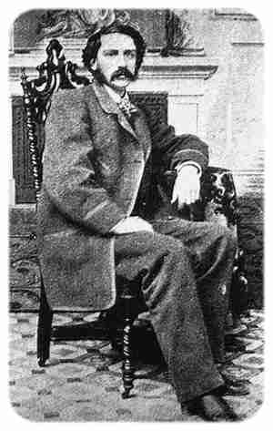

ParaBicychologie
- Accueil >>> index des traductions non cyclistes >>> Une Péripétie Dans La Vie De Mr. John Oakhurst
La traduction ci-dessous est d'un texte de Bret Harte, écrivain et poète américain.

Bret Harte
Une Péripétie dans la Vie de Mr. John Oakhurst
(A Passage in the Life of Mr. John Oakhurst - publié en 1874)
A Passage in the Life of Mr. John Oakhurst, par Bret Harte - 1874. Texte original consultable en ligne ici : http://www.gutenberg.org/files/2886/2886-h/2886-h.htm
2015 traduit de l'anglais, par ef
Tous droits réservés.
Notre partenaire culture-Logic met ce titre à votre disposition à l'écoute en synthèse vocale - et téléchargeable au format mp3 (60 Mo) - sur le site ARTE Radio (audioblog) : Une Péripétie dans la Vie de Mr. John Oakhurst / mp3
Une Péripétie Dans La Vie De Mr. John Oakhurst
Il pensa toujours que ç'avait dû être le destin. Assurément rien ne pouvait avoir été plus contraire avec ses habitudes que de s'être trouvé à la Plaza à sept heures en cette matinée de la mi-été. Le spectacle de son visage terne à Sacramento était inhabituel en cette saison, et, de fait, en toute saison, en quelque endroit public, avant deux heures de l'après-midi. En y repensant des années plus tard sous l'éclairage d'une vie sous le signe du risque, il conclut, avec la philosophie particulière à sa profession, que ça avait dû être le destin.
Mais c'est mon devoir, en tant que chroniqueur rigoureux des faits, de mentionner que la présence de Mr Oakhurst en ce lieu ce matin-là était due à une cause très simple. A exactement six heures trente, la banque étant gagnante pour un montant de vingt milles dollars, il s'était levé de la table du pharaon (NdT : jeu de cartes français, populaire à la cour de Versailles, devenu le plus populaire des jeux de hasard au 19ème siècle aux Etats-Unis), avait cédé sa chaise à un confrère expérimenté, et s'était retiré tranquillement, sans attirer un regard des faces silencieuses, anxieuses, penchées sur la table. Mais quand il entra dans sa luxueuse chambre, traversant la ruelle (NdT : espace entre le lit et le mur), il fut un peu surpris en découvrant le soleil donnant à travers une fenêtre restée ouverte par inadvertance. Quelque chose dans la beauté inhabituelle du matin, peut-être quelque chose dans la fraîcheur de la vue, le frappa alors qu'il était sur le point de fermer les volets, et il hésita. Puis, prenant son chapeau sur la table, il descendit dans la rue par un escalier privé.
Les gens qui étaient dehors à cette heure matinale étaient d'une classe tout à fait inconnue à Mr. Oakhurst. Il y avait des laitiers et des colporteurs distribuant leurs marchandises, des petits commerçants ouvrant leurs boutiques, des bonnes balayant des pas de porte, et parfois un enfant. Mr.Oakhurst regardait tout celà avec une certaine curiosité froide, peut-être tout à fait débarassé de cette inclination cynique avec laquelle il considérait en général les specimen plus prétentieux de sa race qu'il cotoyait habituellement. En fait, je crois qu'il n'était pas du tout mécontent des coups d'oeil admiratifs que ces humbles femmes lançaient à son visage et à sa silhouette élégants, flagrants même pourtant dans une région d'hommes de belle allure. Alors qu'il est très probable que ce méchant vagabond, dans l'orgueil de son isolement social, aurait été froidement indifférent aux avances d'une dame distinguée, une petite fille qui courait admirative à ses côtés dans une robe en guenilles eut le pouvoir de faire venir une légère rougeur sur ses joues pâles. Finalement il la repoussa, mais pas avant qu'elle ait découvert - ce que découvrait , tôt ou tard, ce sexe perspicace et au grand coeur - qu'il était exagérément prodigue et généreux de son argent, et aussi - ce que, peut-être, personne d'autre de son sexe découvrit jamais - que les yeux noirs audacieux de ce distingué gentleman étaient en réalité d'un gris brunâtre et même affectueux.
Il y avait un petit jardin devant un cottage blanc dans une petite rue, qui attira l'attention de Mr. Oakhurst. Il était rempli de roses, d'héliotrope, et de verveine ; des fleurs qui lui étaient suffisamment familières sous la forme plus coûteuse et plus transportable des bouquets, mais, à ce qu'il lui sembla alors, jamais aussi notablement jolies. Peut-être était-ce parce que la rosée était encore fraîche sur elles, peut-être était-ce parce qu'elles n'étaient pas coupées; mais Mr. Oakhurst les admira, non comme un possible tribu futur à la fascinante et accomplie Miss Ethelinda, alors en représentation au "Variétés", spécialement pour le plaisir de Mr. Oakhurst, comme elle le lui avait souvent assuré, ni encore comme une douceur pour la captivante Miss Montmorrissy, avec laquelle Mr. Oakhurst espérait souper ce soir, mais simplement pour lui-même, et, qui sait, pour l'amour des fleurs. Néanmoins, il s'éloigna, et arriva à la place publique, où, rencontrant un banc sous un peuplier, il épousseta l'assise avec son mouchoir, puis il s'assit.
C'était une belle matinée. L'air était si tranquille et calme, qu'un soupir des sycomores semblait la respiration profonde de l'arbre juste en train de s'éveiller, et le faible bruissement de ses branches comme l'étirement de membres engourdis et se revigorant. Au loin les Sierras se détachaient sous un ciel si éloigné qu'il paraissait de couleur incertaine ; si éloigné, que même le soleil désespérait de jamais l'atteindre, et gaspillait négligemment sa force sur le paysage, jusqu'à ce qu'il se mit à étinceler en un contraste vif et blanc. Sous l'effet d'une impulsion qui lui était peu familière, Mr. Oakhurst ôta son chapeau, et s'inclina à demi sur le banc, son visage tourné vers le ciel. Des oiseaux confiants, qui avaient pris une pose d'observation dans des branchages au-dessus de lui, commencèrent apparemment une discussion animée quant à ses possibles intentions malveillantes. Un ou deux, enhardis par le silence, vinrent sautiller sur le sol devant ses pieds, jusqu'à ce que le bruit de roues sur le chemin de graviers les fît fuir.
Levant les yeux, il vit un homme venant lentement dans sa direction, conduisant un véhicule indéfinissable, dans lequel une femme était à la fois assise et couchée. Sans savoir pourquoi, Mr. Oakhurst devina immédiatement que le véhicule avait été inventé et fabriqué par l'homme, en partie à cause de sa bizarrerie, en partie à cause des mains fortes de mécanicien qui le maîtrisaient avec puissance, et en partie pour la fierté manifeste et la compétence certaine dans la manière avec laquelle l'homme le manoeuvrait. Puis Mr. Oakhurst se rendit compte d'autre chose : le visage de l'homme lui était familier. Avec ce don de ne jamais oublier un visage rencontré dans des circonstances "professionnelles", il le retrouva instantanément, classé sous les termes suivants : "A Frisco, le saloon Polka. Perdit sa paye de la semaine. Je crois que c'était - soisante dix dollars - sur le rouge. Ne revint jamais." Il n'y avait, cependant, pas de trace de ce souvenir dans les yeux calmes et le visage immobile qu'il posa sur le nouveau venu, qui, au contraite, rougit, paru embarassé, hésita et puis stoppa avec un mouvement en avant involontaire qui amena le véhicule et sa belle passagère face à face avec Mr. Oakhurst.Je rendrai difficilement justice à la place qu'elle occupera dans cette chronique véridique en décrivant la dame maintenant, si tant est que je sois capable de le faire. Assurément l'opinion populaire était hostile. .Feu le Colonel Starbottle - de qui je tiens une grande expérience du beau sexe avant de lui avoir ensuite été redevable de nombreuses suggestions précieuses - avait, je regrette de le dire, déprécié ses charmes. "Une infirme au visage jaune, passons rapidement ! Une femme malade, avec des yeux acajous, une sorte de vos vierges exaltées, sans chair sur ses os." D'un autre côté, cependant, elle fut l'objet plus tard d'un dénigrement beaucoup plus gracieux venant de son propre sexe. Miss Celestina Howard, deuxième meneuse de ballet au "Variétés", avait avec une grande franchise allitérative, dans les années qui ont suivi, dit d'elle que c'était un "aspic aquilin (NdT : une vipère rapace)." Mlle Brimbonon se rappelait qu'elle avait toujours mis en garde "Mr.Jack" que cette femme lui "empoisonnerait" la vie. Mais Mr. Oakhurst, dont les impressions sont peut-être plus importantes, vit seulement une femme pâle, mince et aux yeux profonds, élevée au-dessus du niveau de son compagnon par le raffinement d'une longue souffrance et de l'isolement, et une sorte de virginité timide dans l'attitude. Les plis de sa robe fraîche et avenante suggéraient une sorte de pureté physique, et il y avait un vrai bon goût pittoresque dans les détails, qui, sans qu'il sache pourquoi, lui firent penser qu'elle avait conçu et fait la robe, de même que le véhicule qu'elle occupait était de toute évidence le travail de son compagnon. Sa main, un peu trop mince, mais bien dessinée, aux doigts délicats, et d'une légèreté toute féminine, était posée sur le bord du véhicule, pendant de la forte poigne de mécanicien de son compagnon.
Il y avait quelque obstacle à la progression du véhicule, et Mr. Oakhurst s'avança pour aider. Pendant qu'on dégageait la roue du trottoir, il fut nécessaire qu'elle lui tint le bras, et pendant un moment sa main fine resta là, légère et froide comme un flocon de neige, et puis, à ce qu'il lui sembla, se dissipa comme un flocon de neige. Alors il se fit une pause, puis on conversa, la dame participant de temps en temps et timidement.
Il apparut qu'ils étaient mari et femme, que depuis les deux dernières années elle avait été une grande invalide, et avait perdu l'usage de ses membres inférieurs à cause de rhumatismes, que jusqu'à il y a peu elle avait été confinée dans son lit, jusqu'à ce que son mari - qui était maître charpentier - se fut avisé de lui fabriquer lui-même ce véhicule. Il la sortait régulièrement prendre l'air avant d'aller au travail, parce que c'était son seul moment disponible, et qu'ils attiraient moins l'attention. Ils avaient consulté de nombreux docteurs, mais sans succès. On leur avait conseillé d'aller aux sources de soufre, mais c'était cher. Mr. Decker, le mari, avait une fois mis de côté quatre vingt dollars dans cet objectif, mais pendant qu'il était à San Francisco il avait été victime d'un vol à la tire , Mr. Decker était si inconscient! (Le lecteur intelligent n'a pas besoin qu'on lui dise que c'est la dame qui est en train de parler.) Ils n'avaient jamais été capables de réunir de nouveau cette somme, et avaient abandonné l'idée. C'était une chose affreuse de s'être fait voler. N'est-ce pas ce qu'il pensait ?
Le visage de son mari était cramoisi ; mais la contenance de Mr. Oakhurst restait calme et impassible, alors qu'il acquiesçait gravement avec elle, et restait à ses côtés en marchant jusqu'à ce qu'ils passent devant le petit jardin qu'il avait admiré. Ici Mr. Oakhurst ordonna une halte et, allant à la porte, stupéfia le propriétaire par une offre absurdement extravagante pour un un assortiment des fleurs. Aussitôt il retourna au véhicule avec les bras remplis de roses, d'héliotrope et de verveine, et les laissa choir sur les genoux de la malade. Alors qu'elle se penchait sur elles avec une délicatesse enfantine, Mr. Oakhurst saisit l'opportunité pour amener son mari à l'écart.
"Peut-être," dit il à voix basse, et sur un ton sans marque d'aucun mal à l'aise, "peut-être est-il aussi bien que vous lui ayez menti comme vous l'avez fait. Vous pouvez dire maintenant que le pickpocket a été arrêté l'autre jour, et que vous avez récupéré votre argent.' Mr. Oakhurst glissa tranquillement quatre pièces en or de vingt dollars dans la large main d'un Mr. Decker perplexe. "Dites celà - ou tout ce que vous voudrez - sauf la vérité. Promettez-moi que vous la tairez."
L'homme promit. Mr. Oakhurst retourna tranquillement devant le petit véhicule. La femme infirme était encore occupée avec les fleurs avec ferveur, et, alors qu'elle levait les yeux vers lui, ses joues pâles semblèrent avoir pris quelques couleurs aux roses, et ses yeux quelque chose de la fraîcheur de leur rosée. Mais à ce moment Mr. Oakhurst salua de son chapeau, et fut parti avant qu'elle pût le remercier.
Je dois dire avec peine que Mr. Decker rompit sans vergogne sa promesse. Cette nuit, avec la profonde bonté de son coeur et l'excessive dévotion à sa femme, il, comme tout mari soumis, non seulement s'offrit lui même, mais aussi son ami et bienfaiteur, en sacrifice sur l'autel familial. Il est équitable, toutefois, d'ajouter qu'il parla avec grande ferveur de la générosité de Mr. Oakhurst, et s'appesantit avec un enthousiasme propre à sa classe sur la renommée mystérieuse et les vices prodigues du joueur.
"Et maintenant, Elsie chérie, dites que vous me pardonnez," dit Mr. Decker, tombant à genoux à côté du lit de sa femme. "Je l'ai fait pour le bien. C'était pour vous, chérie, que j'ai misé cet argent sur ces cartes cette nuit à Frisco (Ndt : San Francisco). J'espérais gagner un tas de pièces, assez pour vous sortir de là, et assez encore pour vous acheter une nouvelle robe."
Madame Decker sourit, et pressa la main de son mari. "Je vous pardonne, Joe chéri," dit-elle, souriant encore, avec les yeux fixant dans le vide vers le plafond, "et vous devriez être fouetté pour me mentir ainsi, vilain garçon! et m'avoir raconté un tel mensonge. Maintenant, n'en parlez plus. Soyez gentil à présent, et si vous me donnez maintenant ce bouquet de roses, je vous pardonnerai." Elle prit la gerbe avec impatience, éleva les roses à son visage, et dit alors, derrière leurs feuilles,
"Joe!"
"Qu'y a-t-il mon coeur?"
"Pensez-vous que ce Monsieur - comment l'appellez-vous? - Jack Oackhurst vous aurait rendu cet argent, si je n'en avais pas parlé?"
"Oui."
"S'il ne m'avait pas du tout vue?"
Mr. Decker leva les yeux. Sa femme était parvenue d'une certaine façon à couvrir tout son visage avec les roses, sauf les yeux, qui brillaient fiévreusement.
"Non! C'est vous, Elsie ; c'est de vous avoir vue qui l'a fait agir ainsi."
"Une pauvre femme malade comme moi?"
"Une douce, petite, adorable Elsie ; le petit trésor de Joe! Comment aurait-il pu ne pas l'aider?"
Madame Decker lança avec émotion un bras autour du cou de son mari, tout en gardant les roses devant son visge avec l'autre. Dissimulée derrière elles elle commença à murmurer doucement et bêtement, "Chéri, mon bêta de Joe, le tendre gros nounours d'Elsie." Mais, vraiment, je ne vois pas en quoi mon devoir de chroniqueur de ces faits exigerait que je poursuive plus avant le discours de cette petite femme, et, par respect pour le lecteur célibataire, je m'arrête là.
Cependant, le matin suivant Mrs. Decker trahissait quelque légère et apparamment injustifiée irritabilité en arrivant à la Plaza, et souhaita aussitôt que son mari la ramène à la maison. Par ailleurs, elle fut extrêment étonnée de rencontrer Mr. Oakhurst juste quand ils faisaient demi-tour, et même douta que ce fut lui, et interrogea son mari s'il s'agissait bien du même étranger que la veille alors qu'il approchait. Son attitude envers Mr. Oakhurst aussi, était très en contraste avec la franche bienvenue de son mari. Mr. Oakhurst le remarqua immédiatement. "Son mari lui a tout raconté et elle a de l'antipathie pour moi," se dit-il, avec cette interprétation fatidique à moitié vraie des motifs d'une femme qui fait se tromper le critique masculin le plus sage. Il s'attarda juste assez longtemps pour prendre l'adresse professionnelle du mari, et puis levant avec gravité son chapeau, sans regarder la dame, reprit son chemin. Celà frappa le sincère maître-charpentier comme étant une des charmantes bizarreries de caractère de sa femme, le fait que, bien que la rencontre fut d'évidence très gênée et désagréable, immédiatement après l'humeur de sa femme s'embellit. "Vous avez été dure avec lui, un peu dure, n'est-ce pas, Elsie/" dit Mr. Decker avec désapprobation. "Je crains qu'il pense que j'ai rompu ma promesse." "Ah, vraiment!" dit la dame avec indifférence. Mr. Decker descendit aussitôt vers l'avant du véhicule. "Vous avez l'allure d'une lady de première classe A1 descendant Broadway dans sa propre calèche, Elsie," dit-il. "Je ne vous avais jamais vue avant ausssi impressionante et si maîtresse de vous même."
Quelques jours plus tard, le propriétaire des Sources de Soufre de San Isabel reçu la note suivante de Mr. Oakhurst, écrite dans son style délicat bien connu.
"CHER STEVE, J'ai pensé à votre proposition d'acheter le quart des intérêts détenu par Nichol, et j'ai décidé de franchir le pas. Mais je ne vois pas comment l'affaire rapportera sauf à ce que vous proposiez plus d'hébergements ici, et du meilleur niveau, j'entends par là pour mes clients. Ce que nous voulons est une extension du bâtiment principal, et deux ou trois chalets additionnels. Je vous envoie un entrepreneur du bâtiment pour prendre en main le travail une bonne fois. Il amène son épouse malade avec lui, et vous devez vous occupez d'eux comme vous le feriez pour l'un d'entre nous.
"Il se peut que je descende là moi-même après la saison , juste pour voir comment avancent les choses, mais je n'y organiserai aucun jeu cette saison.
"Votre dévoué,
"JOHN OAKHURST."
Ce fut seulement la dernière phrase de cette lettre qui provoqua des remarques. "Je peux comprendre," dit Mr. Hamlin, un confrère, à qui la lettre de Mr. Oakhurst était montrée, "je peux comprendre pourquoi Jack investit dans le gros oeuvre et les constructions, parce que c'est pour sûr une mise assurée, et c'est destiné à être quelque chose de très agréable avec le temps, si il vient ici régulièrement. Mais pourquoi véritablement ne monte-t-il pas une salle de jeux cette saison, et saisir ainsi la chance de récupérer une partie de l'argent qu'il investit en construisant, c'est ce qui m'amène maintenant à me demander," et il réfléchit profondément, "à quoi il joue."
La saison avait été prospère pour Mr. Oakhurst, et désastreuse en proportion pour plusieurs membres du corps législatif, des juges, des colonels, et d'autres qui avaient goûté mais brièvement le plaisir de la société nocturne de Mr. Oakhurst. Et de fait Sacramento lui était devenue très ennuyeuse. Il avait pris récemment l'habiture de marches matinales, chose qui parut si inhabituelle et surprenante pour ses amis, tant hommes que femmes, que celà souleva une intense curiosité. Deux ou trois des dernières mirent des espions sur sa piste, mais l'enquête fit seulement apparaître que Mr. Oakhurst marchait jusqu'à la Plaza, s'asseyait pendant un moment sur un banc en particulier, et puis s'en retournait sans voir personne, et l'idée qu'il y avait une femme impliquée dans la situation fut abandonnée. Quelques gentlemen supersticieux de sa profession pensèrent qu'il le faisait pour la "chance". D'autres, plus pratiques, déclarèrent qu'il sortait pour penser à des projets.
Après la saison à Marysville, Mr. Oakhurst alla à San Francisco, de là il retourna à Marysville, mais quelques jours plus tard était vu à San Jose, Santa Cruz, et Oakland. Ceux qui le rencontrèrent déclarèrent que son comportement était agité et fiévreux, et très différent de son calme et de son flegme ordinaires. Le Colonel Starbottle pointa le fait, que à San Francisco, au club, Jack avait refusé de parier. "La main (NdT : il s'agit ici des cartes distribuées au jeu ) est incertaine, monsieur, ça dépend d'elle. Ce n'est pas assez stimulant ; il avait été catégorique!"
De San Jose il partit d'abord pour l'Oregon par voie terrestre avec un équipage plutôt coûteux de chevaux et de campement, mais, en atteignant Stockton, il bifurqua soudainement, et quatres heures plus tard on pouvait le trouver avec un seul cheval entrant dans le canyon de San Isabel Warm Sulphur Springs (canyon des Sources Chaudes de Soufre de Sainte Isabelle.)
C'était une jolie vallée en forme de triangle, située au pied de trois montagnes pentues, sombres avec des pins, et remarquables avec des arbousiers et des eucalyptus. Nichés contre le flanc de la montagne, les bâtiments épars et la longue place de l'hôtel brillaient à travers les feuilles, et ici et là un chalet blanc semblable à un jouet éblouissait sous le soleil. Mr. Oakhurst n'était pas un admirateur de la Nature, mais dans cette satisfaction nouvelle à cette vue, il ressentait quelque chose de similaire à ce qu'il avait ressenti lors de sa première marche dans le matin à Sacramento. Et maintenant des voitures remplies de femmes aux vêtements éclatants commençaient à le dépasser sur la route, et les contours froids du paysage californien commençaient à se couvrir d'une sorte de chaleur et de couleur humaines. Puis la longue place de l'hôtel apparut, épanouie avec la foule revêtue de ses atours. Mr. Oakhurst, un bon cavalier selon l'élite californienne, ne s'occupa pas de sa vitesse alors qu'il arrivait à destination, et arriva à l'hôtel au galop, sauta de cheval d'un coup de hanches à un pied de la place, et puis émergea tranquillement du nuage de poussière soulevé avant sa descente de monture.
Quelque soit la sorte d'excitement fiévreux qui ait pu faire rage en lui, il retrouva tout son calme habituel alors qu'il entrait sur la place. Avec l'instinct né d'une longue habitude, il se tourna et fit face à la multitude d'yeux avec la même indifférence froide avec laquelle il avait affronté depuis des années les ricanements à demi dissimulés des hommes et l'admiration à demi effrayée des femmes. Seule une personne s'avança pour lui souhaiter la bienvenue. Assez curieusement, c'était Dick Hamilton, peut-être le seul présent, qui par naissance, éducation, et position, aurait pu satisfaire le critique social le plus tatillon. Par chance pour la réputation de Mr. Oakhurst, c'était aussi un banquier très riche et une tête de file de la société. "Savez vous avec qui vous avez parlé?" demanda le jeune Parker avec une expression préoccupée. "Oui," répondit Hamilton avec son effronterie caractéristique. "L'homme contre lequel vous avez perdu un millier de dollars la semaine dernière. Je le connais seulement comme relation sociale.". "Mais n'est-ce pas un joueur?" s'enquit la plus jeune encore Miss Smith. "Il l'est," répliqua Hamilton, "mais j'aimerais, très chère jeune dame, que nous jouions tous avec autant de franchise et d'honneteté que notre ami là-bas, et soyions aussi disposés que lui aux bonnes et mauvaises fortunes."
Monsieur Oakhurst était heureusement hors de portée d'oreille de ce colloque, et était même en train de se prélasser nonchalamment mais aux aguets à l'étage supérieur. Tout à coup il entendit un léger pas derrière lui, puis son nom prononcé par une voix familière qui lui fit monter rapidement le sang au coeur. Il se retourna, elle se tenait devant lui.
Mais combien transformée! Si j'avais hésité à décrire l'handicapée aux yeux creux, la femme bizarrement habillée de l'artisan, il y a quelques pages, comment devrais-je faire avec cette dame gracieuse, harmonieuse, élégamment vêtue dans laquelle elle s'était fondue au cours de ces deux mois? En toute bonne foi elle était très jolie. Vous et moi, ma chère madame, aurions été prompts à voir que ces charmantes fossettes étaient mal placées pour être vraiment belles, et trop figées dans leur aspect pour être d'une honnête gaieté, que les délicates lignes autour de ce nez aquilin étaient cruelles et égoïstes, que la douce surprise virginale de ces yeux adorables était la même qu'elle aurait posée sur son assiette ou portée à l'écoute des galants propos de son partenaire de dîner, que sa charmante rougeur allait et venait plus selon ses humeurs que selon les vôtres. Mais vous et moi ne sommes pas amoureux d'elle, chère madame, mais Mr. Oakhurst si. Et, même dans les plis de sa robe de Paris, je crains que ce pauve bonhomme voyait les mêmes traits de pureté qu'il avait vus dans sa robe fruste. Puis il y eut la délicieuse révélation qu'elle pouvait marcher, et qu'elle avait ses chers petits pieds dans les plus minuscules souliers de son chausseur français, avec ces noeuds bleus absurdes, et l'estampille Chappell - rue de quelque chose ou autre - sur l'étroite semelle.
Il courut vers elle avec une rougeur accrue et les mains tendues. Mais elle retira les siennes derrière son dos, jeta rapidement un coup d'oeil le long du hall, et resta à le regarder avec une admiration mi-audacieuse, mi-malicieuse, en contraste total avec son ancienne réserve.
"Je suis très décidée à ne pas vous serrer les mains du tout. Vous venez juste de passer devant moi sur la place sans parler, et j'ai couru après vous, comme je suppose beaucoup d'autres pauvres femmes l'ont fait."
Mr. Oakhurst bredouilla qu'elle était si changée.
"Raison de plus pour que vous me reconnaissiez. Qui m'a changée? Vous. Vous m'avez recréée. Vous avez trouvé une femme sans défense, infirme, malade, misérable, avec une seule robe à se mettre sur le dos, et faite par elle-même, et vous lui avez donnez la vie, la santé, la force, et la fortune. Vous avez fait celà, et vous le savez Monsieur. Que pensez vous de votre travail?" Elle prit dans chaque main un pli de sa robe, et lui fit une révérence espiègle. Puis, d'un geste soudain, comme en cédant, elle lui tendit ses deux mains.
Aussi outrageant que fut ce speech, et aussi peu féminin comme je crois le jugera tout lecteur sincère, je crains qu'il ait plu à Mr. Oakhurst. Non qu'il n'était pas habitué à une certaine franche considération féminine, mais alors celà venait de l'alcôve, et non du cloître, avec lequel il persista toujours à associer Mrs. Decker. Etre traité de la sorte par une puritaine infirme, une sainte malade encore revêtue de l'austérité de la souffrance, une femme qui avait une Bible sur sa coiffeuse, qui allait à l'église trois fois par jour, et était fidèle à son mari, le stupéfia complètement. Il tenait encore ses mains quand elle poursuivit,
"Pourquoi n'êtes vous pas venu avant? Que faisiez vous à Marysville, à San Jose, à Oakland? Vous voyez que je vous ai suivi. Je vous ai vu quand vous descendiez le canyon, et j'ai su aussitôt que c'était vous. J'ai vu votre lettre à Joseph, et savais que vous veniez. Pourquoi ne m'avez-vous pas écrit? Vous aviez le temps! Bonsoir, Mr. Hamilton."
Elle avait retiré ses mains, mais pas avant que Hamilton, descendant l'escalier, fut presque contre eux. Il la salua en soulevant son chapeau avec un calme de bonne écucation, salua familièrement Oakhurst d'un signe de tête, et passa. Quand il fut parti, Mrs. Decker leva les yeux vers Mr. Oakhurst. "Un jour je vous demanderai une grande faveur."
Mr. Oakhurst bégaya que ce devrait être maintenant.
"Non, pas avant que vous me connaissiez mieux. Alors, un jour, je veux que vous tuiez cet homme!"
Elle sourit d'un petit sourire en coeur si charmant, une telle exposition de fossettes, quoiqu'un peu figée dans les coins de sa bouche, une lueur si innocente dans ses yeux marrons, et une couleur si adorable sur ses joues, que Mr. Oakhurst (qui riait rarement) sourit lui aussi de bon coeur. C'était comme si un agneau avait proposé à un renard une incursion dans une bergerie voisine.
Quelques soirées plus tard, Mrs. Decker émergeait d'un cercle charmé de ses admirateurs à l'hôtel piazza, s'excusa pour quelques instants, déclina en souriant qu'on l'escorta, et courut à son peitit chalet - un de ceux créés par son mari - de l'autre côté de la rue. Peut-être à cause de l'effort soudain et inaccoutumé dans son état encore convalescent, elle respirait rapidement et fiévreusement quand elle entra dans son boudoir, et une ou deux fois appuya sa main sur sa poitrine. Elle sursauta en allumant la lumière de découvrir son mari allongé sur le sofa.
"Vous avez l'air fiévreuse et énervée, Elsie chérie," dit Mr. Decker. "Votre état n'empire pas n'est-ce pas?"
Le visage de Mrs. Decker avait pâli, mais maintenant reprenait des couleurs. "Non," dit-elle, "seulement une petite douleur ici," alors qu'elle posait une fois de plus sa main sur son corsage.
"Puis-je faire quoi que ce soit pour vous?" dit Mr. Decker, en se levant et affectueusement préoccupé.
"Courez à l'hôtel et rapportez moi du brandy, vite!"
Mr. Decker courut. Mrs. Decker ferma et verrouilla la porte, et puis, portant la main à sa poitrine, retira la "douleur". Elle était pliée en quatre, et était, je suis peiné de le dire, écrite de la main de Mr. Oakhurst.
Elle la dévora avec les yeux ardents et les joues brûlantes jusqu'à ce que des pas se fassent entendre sous le porche, alors elle la replaca rapidement dans sa poitrine, et dévérouilla la porte. Son mari entra. Elle porta la liqueur à ses lèvres, et déclara se sentir mieux.
"Allez vous retourner là-bas cette nuit?" demanda Mr. Decker docilement.
"Non," dit Mrs. Decker, avec ses yeux fixés rêveusement sur le sol.
"Je ne le ferais pas si j'étais vous," dit Mr. Decker avec un soupir de soulagement. Après une pause, il prit place sur le sofa, et, attirant sa femme à côté de lui, dit, "Savez-vous à quoi j'étais en train de penser quand vous êtes entrée, Elsie?" Mrs. Decker passa ses doigts dans ses cheveux noirs épais, et ne put imaginer.
"Je pensais à autrefois, Elsie. J'étais en train de penser aux jours où j'ai construit ce chalet pour vous, Elsie, quand j'avais l'habitude de vous sortir en promenade, et était à la fois compagnon et conducteur. Nous étions pauvres alors, et vous étiez malade, Elsie, mais nous étions heureux. Nous avons de l'argent maintenant, et une maison, et vous êtes une femme tout à fait autre. Je dois dire, chérie, que vous êtes une nouvelle femme. Et c'est là où nous en venons au problème : j'ai pu vous construire un chaler, Elsie, j'ai pu vous construire une maison,, Elsie, mais ça s'est arrêté là. Je n'ai pas pu vous construire. Vous êtes forte et belle, Elsie, et fraîche et nouvelle. Mais cependant, Elsie, vous n'êtes pas mon oeuvre!"
Il s'arrêta. Avec une main posée gentiment sur son front, et l'autre appuyée sur son sein, comme si elle sentait la douleur présente, elle dit doucement et d'une voix apaisante,
"Mais ce fut votre travail, chéri."
Mr. Decker secoua la tête tristement. "Non, Elsie, pas le mien. J'ai eu la chance de pouvoir le faire une fois, et je l'ai laissée passer. C'est fait maintenant, mais pas par moi."
Mrs. Decker leva ses yeux surpris, innocent, vers les siens. Il l'embrassa tendrement, puis poursuivi d'une voix plus gaie,
"Ce n'est pas tout ce que je pensais, Elsie, je pensais que peut-être vous accordiez trop de votre compagnie à ce Mr. Hamilton. Non qu'il y ait quoi que ce soit de mal à ça, de votre part ou de la sienne, mais ça pourrait amener les gens à jaser. Vous êtes la seule ici, Elsie," dit le maître-charpentier, regardant tendrement sa femme, "au sujet de qui on ne fait pas de commentaire, dont le comportement n'est pas jugé et condamné."
Mrs. Decker était heureuse qu'il ait abordé ce sujet. Elle aussi avait pensé la même chose. Mais elle ne pouvait décemment pas être impolie envers Mr. Hamilton, qui était un distingué gentleman, sans en faire un puissant ennemi. "Et il m'a toujours traitée comme si j'étais une dame née dans son propre cercle," ajouta la petite femme, avec une certaine fierté qui fit sourire affectueusement son mari. "Mais j'ai pensé à un plan. Il ne restera pas ici si je dois partir. Si, par exemple, j'allais à San Francisco pour visiter maman quelques jours, il serait parti avant que je sois de retour."
Mr. Decker fut enchanté. "Absolument," dit-il, "partez demain. Jack Oakhurst est sur le départ, et je vous confierai à ses soins."
Mrs. Decker ne pensait pas que c'était prudent. "Mr. Oakhurst est notre ami, mais vous connaissez sa réputation." En fait, elle ne savait pas si elle devait partir maintenant, sachant qu'il partait ce même jour, mais avec un baiser, Mr. Decker chassa ses scrupules. Elle se rendit gracieusement. Peu de femmes, en fait, savaient comment renoncer avec autant de charme qu'elle.
Elle resta une semaine à San Francisco. Quand elle revint, elle était un rien plus mince et plus pâle qu'elle ne l'avait été. C'était expliqua-t-elle le résultat de peut-être trop d'activité et d'enthousiasme. "J'étais dehors presque tout le temps, comme maman vous le dira," di-elle à son mari, "et toujours seule. Je deviens très indépendante maintenant," ajouta-t-elle gaiement. "Je ne veux aucun chaperon. Je crois, Joey chéri, que je pourrais même me débrouiller sans vous, je suis si brave!"
Mais sa visite, n'avait apparamment pas produit le dessein escompté impulsivement. Mr. Hamilton n'était pas parti, mais était resté et demanda après eux ce même soir. "Il m'est venu à l'idée un plan, cher Joey," dit Mrs. Decker, quand il s'en fut allé. "Ce pauvre Mr. Oakhurst a une misérable chambre à l'hôtel. Supposons que vous lui demandiez, quant il reviendra de San Francisco, qu'il reste avec nous. Il peut s'installer dans notre pièce libre. Je ne pense pas," ajouta-t-elle malicieusement, "que Mr. Hamilton nous rendra visite souvent." Son mari sourit, laissa entendre qu'elle était un peu coquine, lui pinça la joue, et accepta. "Ce qui est singulier chez une femme," dit-il plus tard à Mr. Oakhurst confidentiellement, "c'est que sans avoir aucn plan propre, elle prendra celui de n'importe qui, et construira dessus une maison entièrement différente et qui convienne à ses besoins. Et je parierais mon chapeau que vous ne seriez pas capable de dire si en plus elle ne vous ferait pas tirer les plans et les mesures! C'est ce qui m'est arrivé!"
La semaine suivante, Mr. Oakhurst était installé dans le chalet des Deckers. Les relations de travail entre lui et son mari étaient connues de tous, et sa propre réputation était au-dessus de toute suspicion. De fait, peu de femmes étaient plus populaires. C'était une femme d'intérieur, elle était réservée, elle était pieuse. Dans une région où les femmes jouissaient d'une grande latitude et d'une grande liberté, elle ne sortait ou ne marchait avec personne d'autre que son mari, A une époque de language argotique et au sens ambigu, elle était toujours précise et formelle dans ses conversations. En pleine mode de présentation ostentatoire, elle ne portait jamais un diamant, ni un seul bijou de valeur. Elle ne se permettait jamais la moindre inconvenance en public. Elle ne s'accordait jamais les familiarités de la société californienne. Elle se prononçait conte l'attitude prédominante d'incrédulité et de scepticisme religieux. Peu de ceux qui furent présents oublieront jamais la façon empreinte de dignité majestueuse dont elle réprimanda Mr. Hamilton en public dans le petit salon, pour son intervention dans une discussion sur un ouvrage sur le matérialisme, publié dernièrement, et quelques-uns parmi eux, en plus, n'oublieront pas l'expression de surprise amusée sur le visage de Mr. Hamilton, qui se changea peu à peu en une gravité sardonique, alors qu'il renonçait courtoisement à défendre son point de vue ; certainement pas Mr. Oakhurst, qui, de ce moment, commença à éprouver un intolérable mal-à-l'aise avec son ami, et même - si un tel terme pouvait s'appliquer à quelque sentiment de Mr. Oakhurst - à le redouter.
A cette époque Mr. Oakhurst avait commencé à montrer des symptômes de changement dans ses habitudes. Il était rarement, voire jamais, vu dans ses vieux repaires, dans un bar, ou avec ses vieux associés Pink, et écrivait des notes d'une main distraite, accumulées sur la coiffeuse dans ses appartements à Sacramento. On pensait à Sacramento qu'il avait une maladie du coeur, pour laquelle son médecin avait prescrit un repos complet. Il lut plus, il vendit ses chevaux rapides, il alla à l'église.
J'ai un très vif souvenir de sa première apparition ici. Il n'accompagnait pas les Deckers, n'alla pas non plus sur leur banc, mais entra alors que le service commençait, et prit silencieusement place sur un des bancs du fond. Par quelque mystérieux instinct, sa présence se fit notoire dans la congrégation, dont certains allèrent jusqu'à s'oublier, par curiosoté, regardant à l'entour, et apparamment lui adressaient leurs répons. Avant que le sermon soit terminé, on avait compris sans équivoque que "misérable pêcheur" signifiait Mr. Oakhurst. Cette mystérieuse influence ne manqua pas d'affecter le prêtre, qui introduisit une allusion sur les activités et les habitudes de Mr. Oakhurst dans un sermon sur l'architecture du temple de Salomon, d'une façon si manifeste et si laborieuse, à en faire réagir le plus jeune d'entre nous avec indignation. Heureusement, cependant, celà glissa sur Jack. Je ne crois même pas qu'il l'écouta. Son beau visage, sans couleur, mais un peu fatigué et pensif, était insondable. Seulement une fois, pendant le chant d'un hymne, à une certaine note dans la voix du contralto, il se glissa dans ses yeux sombres un regard de tendresse mélancolique, à la fois si ardent et si désespéré, que ceux qui le regardaient se sentirent illuminés. J'ai encore très vivement en mémoire le moment où il se mit debout pour recevoir la bénédiction, qui laissait penser, par son attitude et sa veste étroitement boutonnée, qu'il allait recevoir le feu de son adversaire à dix pas. Après la messe, il disparut aussi discrètement qu'il était entré, et évita heureusement d'entendre les commentaires sur son acte téméraire. Sa présence fut généralement considérée comme une offense, attribuable seulement à quelque dérèglement fantaisiste ou peut-être à un pari. Seuls un ou deux pensèrent que le sacristain avait été extrêment négligent de ne pas l'avoir expulsé après avoir découvert qui il était, et le prééminent titulaire d'un banc fit remarquer, que s'il ne pouvait pas amener sa femme et sa fille à cette église, sans les exposer à une telle influence, il essaierait de trouver une église où se fut possible. Un autre relia la présence de Mr. Oakhurst à certaines influences de la Haute Eglise, dont il regrettait de dire qu'il en avait trouvé trace chez leur pasteur. Deacon Sawyer, dont la femme chétive et délicatement méthodique, lui avait déjà donné onze enfants, et était morte dans son ambitieuse tentative de compléter la douzaine, déclara que la présence d'une personne telle que Mr. Oakhurst aux conquêtes nombreuses et sans compter, était une insulte à la mémoire de la défunte, ce que, en tant qu'homme, il ne pouvait pas tolérer.
C'est à cette époque que Mr. Oakhurst, en contraste avec le monde conventionnel auquel il s'était jusque là rarement mêlé, se rendit compte qu'il y avait quelque chose dans son visage, sa figure, et son maintien, tout à fait différent des autres hommes, quelque chose qui s'il ne trahissait pas sa précédente carrière, au final, montrait une individualité et une originalité qui éveillaient la méfiance. Pour cette croyance, il rasa ses longues moustaches soyeuses, et brossa religieusement chaque matin ses frisures emmêlées. Il alla même au point d'affecter une négligence vestimentaire, et cacha ses pieds petits, minces, arqués, dans les plus larges et les plus lourdes chaussures de marche. Il y a une histoire qui dit qu'il alla chez son tailleur à Sacramento, et lui demanda de lui faire un assortiment de vêtements comme en porte tout un chacun. Le tailleur, familier des exigences de Mr. Oakhurst, ne comprenait pas ce qu'il voulait dire par là. "Je veux dire, dit Mr. Oakhurst brutalement "quelque chose de RESPECTABLE, quelque chose qui ne m'aille pas parfaitement, vous comprenez." Mais, quoiqu'il en soit, Mr. Oakhurst aurait pu cacher ses membres harmonieux sous des vêtements cousus et faits chez soi, il y avait quelque chose dans son maintien, quelque chose dans le port de sa belle tête, quelque chose dans la subtile et forte masculinité de sa présence, quelque chose dans sa parfaite, complète discipline et le contrôle de ses muscles, quelque chose dans la grande sérénité de son caractère, une sérénité non tant conséquence d'une règle intellectuelle que sa nature profonde, que, où qu'il aille, et avec qui que ce soit, il était toujours un homme qu'on remarquait parmi dix milles. Peut-être cela ne fut-il jamais aussi clairement laissé entendre à Mr. Oakhurs, que quand, enhardi pas les conseils et l'assistance de Mr. Hamilton, et ses propres prédilections, il devint courtier à San Francisco. Avant même, objection fut faite quant à sa présence dans le Comité, - l'objection fut soulevée avec beaucoup d'éloquence par Watt Sanders, qui était supposé être l'inventeur du système de "pousser dehors" pour se débarasser des actionnaires pauvres, et qui joussait aussi de la réputation d'avoir provoqué la ruine et le suicide de Briggs de Tuolumne - avant même donc cette manifestation formelle de la respectabilité contre l'anarchie, furent les insinuations venimeuses que la mine et la contenance de Mr. Oakhurst, non seulement avaient fait fuir prématurément les pigeons, mais provoqué un gros malaise parmi les aigles-pêcheurs qui tournaient autour de lui avec leur butin. "Foutaise! Il peut nous convenir autant que n'importe qui," dit Joe Fielding.
Il ne restait que quelques jours avant la fin de la brève saison estivale aux Sources Chaudes de San Isabel. Ce qu'il y avait de plus distingué était déjà parti, et il y avait une désagréable ambiance délétère et déprimante dans ce qui restait de vie sociale. Mr. Oakhurst était de mauvaise humeur. Il y avait des indices que même la réputation intacte de Mrs. Decker ne pourrait plus la protéger des ragots que sa présence provoquait. Il est juste envers elle de dire que pendant les dernières semaines de cette épreuve, elle ressemblait à une martyre douce, pâle, et se comportait envers ses calomniateurs avec l'attitude clémente et suave de quelqu'un qui ne dépend pas de l'hommage de la foule, mais s'appuie sur la valeur d'une morale plus précieuse que la faveur populaire. "Ils jasent à propos de moi et Mr. Oakhurst, ma chère," dit-elle à une amie, "mais le ciel et mon mari peuvent mieux répondre à leurs calomnies. Il ne sera jamais dit que mon mari aura tourné le dos à un ami dans l'adversité, parce que sa situation a changé, parce que son ami était pauvre, et que lui était riche." Ce fut la première indication au public que Jack avait perdu de l'argent, alors qu'on savait généralement que les Deckers avaient acheté dernièrement quelque propriété de valeur à San Francisco.
Quelques soirées plus tard, il survint un incident qui apparaissait désagréablement en disssonance avec l'harmonie sociale générale qui avait toujours existé à San Isabel. C'était au dîner, et Mr. Oakhurst et Mr.Hamilton, qui étaient assis ensemble à une table à l'écart, furent observés s'animant au point d'en être altérés. Quant ils atteignirent le hall, par un commun instinct il entrèrent dans une petite pièce pour déjeûner qui était vacante, et fermèrent la porte. Puis Mr. Hamilton se tourna vers son ami avec un sourire mi-amusé, mi-sérieux, et dit :
"Si nous allons nous quereller, Jack Oakhurst, vous et moi, au nom de tout ça c'est ridicule ; ne faites pas ça pour une..."
Je ne sais pas quelle épithète devait suivre. soit elle ne fut pas dite, soit elle se perdit, car au même moment Mr. Oakhurst remplit un verre à vin, et jeta son contenu à la figure de Hamilton.
Alors qu'ils se faisaient face, les hommes semblaient avoir changé de nature. Mr. Oakhurst était tremblant d'excitation, et le verre à vin qu'il posa sur la table tremblait entre ses doigts. Mr. Hamilton resta sur place, blanc-grisâtre, raide, et ruisselant. Après un moment, il dit froidement :
"Qu'il en soit ainsi. Mais rappelez-vous, notre querelle commence ici. Si je suis abattu de votre main vous ne pourrez le mettre en avant pour laver sa réputation ; si vous êtes abattu de la mienne, on ne fera pas de vous un martyr. Je suis désolé que ça en soit arrivé là, mais ainsi-soit-il, maintenant le plus tôt sera le mieux."
Il se tourna fièrement, baissa ses paupières sur ses yeux froids bleu-acier, s'inclina comme s'il rengainait une rapière, et avec froideur sortit.
Il se rencontrèrent, douze heures après, dans un petit vallon à deux miles de l'hôtel, sur la route de Stockton. Alors que Mr. Oakhurst recevait son pistolet des mains du Colonel Starbottle, il lui dit à voix basse, "Quelle que soit la façon dont tournent les choses, je ne retournerai pas à l'hôtel. Vous trouverez des instructions dans ma chambre. Allez-y" Mais sa voix s'altéra subitement, et il détourna ses yeux brillants, au plus grand étonnement de son assistant. "J'ai été dans cette situation une douzaine de fois avec Jack Oakhurst," dit le Colonel Starbottle, "et je ne l'avais jamais vu avant dans cet état. Faîtes fi de moi, si je n'ai pas pensé qu'il était en train de perdre courage, pendant qu'il rejoignait sa position.
Les deux coups furent presque simultanés. Le bras droit de Mr. Oakhurst tomba d'un coup à son côté, et son pistolet serait tombé de ses doigts paralysés ; mais la discipline des nerfs et des muscles entraînés prévalut, et il conserva sa prise jusqu'à ce qu'il l'ait changée de main, sans bouger de sa position. Puis il y eut un silence qui sembla interminable, un rassemblement de deux ou trois figures sombres là où un volute de fumée flottait encore paresseusement, puis la voix pressée, rauque, haletante du Colonel Starbottle à son oreille, "il est sérieusement touché à travers les poumons, dépêchez-vous d'aller le voir!"
Jack tourna ses yeux sombres et interrogateurs sur son assistant, mais ne semblait pas écouter, ou plutôt semblait ententre une autre voix, plus éloignée. Il hésitat, et puis fit un pas en avant vers le groupe plus loin. Puis il s'arrêta de nouveau alors que les hommes se séparaient, et le chirurgien vint en hâte vers lui.
"Il voudrait parler avec vous un moment," dit l'homme. "Vous avez peu de temps à perdre, je sais, mais," ajouta-t-il sur un ton plus bas, "il est de mon devoir de vous dire qu'il en a encore moins."
Un regard de désespoir, si irrémédiable dans son intensité submergea le visage d'habitude impassible de Mr. Oakhurst, que le chirurgien poursuivit : "Vous êtes touché," dit-il, jetant un regard au bras inerte de Jack.
"Rien, une égratignure," dit Jack hâtivement. Ensuite il ajouta avec un sourire amer, "Ce n'est pas un jour de chance aujourd'hui. Mais venez nous verrons ce qu'il veut."
De sa longue foulée fiévrieuse il dépassa le chirurgien, et un moment après il se tenait près du mourant qui gisait - comme la plupart des mourants - comme la figure calme et posée, au centre d'un groupe anxieux. Le visage de Mr. Oakhurst était moins calme en s'agenouillant à côté de lui, et il prit sa main. "Je veux parler seul avec ce gentleman," dit Hamilton, avec quelque chose de ses vieilles manières impérieuses, en se tournant vers ceux près de lui. Quand ils se furent reculés, il leva les yeux sur Oakhurst.
"J'ai quelque chose à vous dire, Jack."
Son propre visage était blanc, mais pas aussi blanc que celui que Mr. Oakhurst pencha sur lui, un visage si pâle, hanté par les doutes, et un pressentiment désespéré d'un mal à venir, un visage si pathétique dans son infinie lassitude et son envie de mourir, que le mourant en fut touché, même dans la langueur de sa fin, avec un pincement au coeur de compassion, et le sourire cynique disparut de ses lèvres.
"Pardonnez-moi Jack," murmura-t-il plus faiblement, "pour ce que j'ai à vous dire. Je ne le dis pas avec colère, mais seulement parce que ça doit être dit. Je n'aurais pas fait mon devoir envers vous, je ne pourrais pas mourir en paix, avant que vous sachiez tout. C'est au mieux une triste affaire que tout celà. Mais on ne peut plus rien y changer. J'aurais seulement dû être abattu par le pistoler de Decker, et pas par le vôtre."
Une rougeur comme de feu monta aux joues de Jack, et il se serait mis debout, mais Hamilton le retint rapidement.
"Ecoutez! Dans ma poche vous trouverez deux lettres. Prenez-les, allons! Vous reconnaîtrez l'écriture. Mais promettez que vous ne les lirez pas avant d'être en lieu sur. Promettez-moi."
Jack ne dit rien, mais tint les lettres entre ses doigts comme si elles avaient été de charbon incandescent.
"Promettez-moi," dit Hamilton faiblement.
"Pourquoi?" demanda Oakhurst, laissant retomber avec froideur la main de son ami.
"Parce que," dit le mourant avec un sourire amer, "parce que... quand vous les aurez lues... vous... retournerez... pour... faire avouer... et tuer!"
Ce furent ses dernières paroles. Il pressa la main de Jack faiblement. Puis son étreinte se relacha, et son cadavre s'affaissa.
Il était presque dix heures du soir, et Mrs Decker était allongée languidement sur le sofa avec un roman dans les mains, pendant que son mari discutait de la politique de la région au bar de l'hôtel. C'était une nuit chaude ; et la porte-fenêtre qui donnait sur un petit balcon était entrouverte. Tout à coup elle entendi un bruit de pas venant du balcon, et elle leva les yeux du livre avec un léger sursaut. L'instant d'après la fenêtre était poussée vivement, et un homme entra.
Mrs Decker se redressa avec un petit cri de peur.
"Pour l'amour du ciel, Jack, êtes-vous fou? Il est seulement sorti pour un moment ; il peut revenir à tout instant. Revenez dans une heure, demain, à n'importe quel moment ou je peux me débarrasser de lui, mais partez, maintenant chéri, immédiatement."
Mr. Oakhurst marcha à la porte, la verrouilla, puis lui fit face sans un mot. Son visage était hagard, la manche de son manteau pendant sur un bras qui était bandé et ensanglanté.
Cependant sa voix ne faiblit pas quant elle se tourna vers lui. "Qu'est-il arrivé Jack. Pourquoi êtes vous ici?"
Il ouvrit son manteau, et jeta deux lettres sur ses genoux.
"Pour vous retourner les lettres de votre amant, pour vous tuer, puis me tuer," dit-il d'une voix si faible qu'elle était presque inaudible.
Parmi les nombreuses vertus de cette admirable femme, il y avait un invincible courage. Elle ne faiblit pas, elle ne cria pas ; elle se radossa tranquillement, croisa les mains sur ses genoux, et dit calmement,
"Et pourquoi ne le feriez vous pas?"
Aurait elle reculé, aurait elle montré quelque peur ou repentir, aurait elle tenté une explication ou excuse, Mr. Oakurst l'aurait interprété comme une preuve de culpabilité. Mais il n'est pas de qualité que le courage reconnaisse aussi rapidement que le courage. Il n'est pas d'état devant lequel le désespoir ne s'incline sauf le désespoir. Et la capacité d'analyse de Mr. Oakhurst n'était pas assez aigüe pour l'empêcher de confondre son courage avec une qualité morale. Même dans sa fureur, il ne pouvait s'empêcher d'admirer cette intrépide invalide.
"Pourquoi ne le feriez-vous pas?" répéta-t-elle avec un sourire. "Vous m'avez donné la vie, la santé, et le bonheur, Jack. Vous m'avez donné votre amour. Pourquoi ne pourriez-vous reprendre ce que vous avez donné? Allez-y. Je suis prête."
Elle tendit ses mains avec cette même grace d'abandon infini avec laquelle elle avait pris les siennes le premier jour de leur rencontre dans l'hôtel. Jack leva la tête, la regarda furieusement pendant un moment, tomba à genoux à côté d'elle, et porta les plis de sa robe à ses lèvres fiévreuses. Elle était trop fine pour ne pas voir instantanément sa victoire. En même temps, elle était trop femme, avec toute son habileté, pour se retenir de savourer complètement cette victoire chez elle. Au même moment, comme le réflexe d'une femme outragée et blessée, elle se leva, et, d'un geste impérieux, montra la fenêtre. Mr. Oakhurst se leva à son tour, jeta un regard sur elle, et sans un autre mot s'effaça pour toujours.
Quand il fut parti, elle ferma la fenêtre et la verrouilla, et, allant à la cheminée dans la salle, mit les lettres, une par une, dans les flammes du foyer jusqu'à ce qu'elles fussent consumées. Je ne voudrais pas que le lecteur pense, que, pendant cette pénible opération, elle resta immobile. Ses mains tremblaient, et - n'étant pas une brute - pendant quelques minutes (peut-être plus) elle se sentit très mal, les coins de sa bouche délicate étaient affaissés. Quand son mari arriva, c'est avec une vraie joie qu'elle courut à lui, et se blottit contre sa large poitrine avec un sentiment de sécurité qui fit vibrer le brave homme jusqu'à l'âme.
"J'ai entendu des nouvelles terribles cette nuit, Elsie," dit Mr. Decker, après que quelques tendresses furent échangées.
"Ne me dites rien de terrible, chéri : je ne suis pas très bien cette nuit," plaida-t-elle doucement.
"Mais c'est en rapport avec Mr. Oakhurst et Hamilton."
"S'il vous plaît!" Mr. Decker ne put résister à la supplique de ces mains blanches et de cette bouche délicate, et la prit dans ses bras. Soudain il dit, "Qu'est-ce que cela?"
Il montrait le bas de sa robe blanche. Là où Mr. Oakhurst l'avait touchée, il y avait une tache de sang.
Ce n'était rien, elle s'était légèrement coupé la main en fermant la fenêtre ; elle est si difficile à fermer! Si Mr. Decker s'était rappelé de fermer et verrouiller la poignée avant de sortir, il aurait pu lui éviter cela. Il y avait tant d'irritabilité sincère et de force dans cette remarque, que Mr. Decker fut submergé par le remord. Mais Mrs. Decker le pardonna avec cette miséricorde que j'ai déjà soulignée dans ces pages. Et avec le halo de ce pardon et cette confiance maritale encore persistants sur le couple, avec la permission du lecteur nous allons les laisser, et retourner à Mr. Oakhurst.
Mais seulement après deux semaines. A la fin de cette période, il alla dans ses appartements à Sacramento, et suivant sa vieille habitude prit sa place à la table de pharaon.
"Comment va votre bras Jack?" demanda un joueur imprudent.
Il y eut un sourire qui suivit la question, qui, toutefois, disparut quand Jack regarda tranquillement l'intervenant.
"Il a encore un peu de mal à se mouvoir, mais je peux tirer aussi bien avec le gauche."
Le jeu se poursuivit dans ce silence convenable qui distinguait habituellement la table à laquelle Mr. John Oakhurst présidait.
FIN
Website © Copyright - ef. Bicy Gonzo.